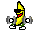

阿空 Kong
今天除了我的屌還在，好像都怪怪的
2011-01-16 21:35:30
Responses :
latest
烈焰風痕影
...(好想笑)
腹黑のフィル
說
所以你的屌今天很好囉(?
黑狗.
說
太冷ˋ?
伊諾。F
說
太冷的關係吧~
SALT.BB喵
說
= =,所以你剛在做愛?
Echo貓
說
No Regret
說
為什麼??
卡肉絲
說
有屌就好阿
黃小狼
說
我看成 屌環 在....我好糟糕
~廷~
說
禁忌之星
說
達文豬
說
 哈哈哈 有這麼嚴重嗎
Hans
說
所以你今天是用…撥電話給我？
Eloy 埃洛伊
說
嘯月望犬
說
呆熊～不是熊~~
說
alex_tw
說
... 噗
阿空 Kong
hansbobby
: 用手機撥的啊
【不正經】WALA
說
kong0107
: 今天應該全身都好好的吼